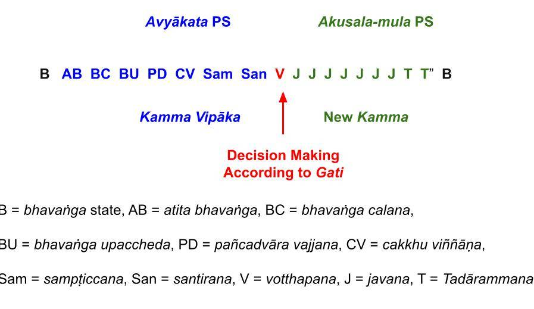

October 17, 2017; revised September 15, 2020; December 22, 2023
1. First, a word about the nomenclature: The Pāli word is avyākata (or abyākata) and the Sinhala word is avyākruta. It means "not designated as kusala or akusala kamma that can bring vipāka in the future, i.e., kammicaly neutral": no javana cittās are involved. See "Purāna and Nava Kamma - Sequence of Kamma Generation."
- Kamma vipāka are kammically neutral. But based on kamma vipāka, we initiate new kamma; see, "How Are Paṭicca samuppāda Cycles Initiated?". I recommend reading that first before continuing to this post.
- Both categories -- kamma vipāka and kamma generation -- can be described by Paṭicca samuppāda (PS).
- Another key point I want to point out is that avyākata PS cycles NEVER start with a pabhassara citta; see below.
2. Our physical body arose due to a past kamma vipāka. It can bring sensory inputs via the six senses, and IF we get attached --taṇhā -- to those sensory inputs, THEN that leads to new kamma by us. That is why it is a never-ending process until one attains Nibbāna. After the Arahanthood, one will still experience such kāma vipāka (until the death of the physical body) but WILL NOT get attached to them, i.e., no new kamma will be generated.
This cyclic process can be described in three steps:
- One sees, hears, smells, tastes, makes body contacts, or a "dhammā" comes to one's mind. These do not "just happen"; they happen due to reasons (causes). They come about due to kamma vipāka, and those thoughts that arise from them are called vipāka citta OR avyākata citta since they are kammically neutral.
- Then, based on one's gati (pronounced "gathi"), āsava, anusaya, one's mind may automatically get interested in a sensory input (called an ārammana) and may get attached to that sensory input. This happens within a billionth of a second, and we DO NOT have control over that initial response either; manō saṅkhāra are generated AUTOMATICALLY in one's mind. These are also part of the avyākata citta since they arise AUTOMATICALLY within the same citta vīthi (at the beginning of the citta vithi, as explained below.)
- IF one gets attached, then one starts generating new kamma by thinking CONSCIOUSLY about that sense input (generating vacī saṅkhāra), i.e., one starts "wheeling around" accumulating "san" that contributes to new kamma; see, "Saṅkhāra, Kamma, Kamma Bīja, Kamma Vipāka." That new kamma can get stronger if we may also start doing kāya saṅkhāra via speech and bodily actions.
3. All those three steps start even before our minds register that we have started accumulating new kamma. This is because a citta vīthis are very fast; see below. But if we are mindful, we can "catch" such "wheeling around" within a few seconds and stop just the apuññābhi saṅkhāra (we should not stop puññābhi saṅkhāra or moral thoughts).
- But that requires careful monitoring of our "automatic responses" to such sense inputs, i.e., "being mindful." With practice, one can "catch" them quickly and stop immoral thoughts/speech/actions.
- If we keep doing that, then OVER TIME, our gati will change for the better, and our attachments to "bad things" will fade away; see "Difference Between Taṇhā and Upādāna." What is described in that post is the basis of Satipaṭṭhāna/Ānapāna Bhāvanā. If one can grasp this concept and implement it diligently over a few months, one will be able to see for oneself the benefits!
- Also, see "Gati, Bhava, and Jāti" to read about the critical concept of gati. It is incorrect to say we have a "self" or "no-self"; we only have gati that can be changed.
- One can try it with "bad habits" (smoking, drugs, over-eating, etc.) first to see the power of it, and then extend to other dasa akusala. This guides the way to the Sotapanna stage because that will make it easier to grasp Tilakkhana.
4. It is very important to understand the above steps, and the post "Tanhā – How We Attach Via Greed, Hate, and Ignorance" is a necessary first read too. What happens is explained in a bit more detail in "Vedanā (Feelings) Arise in Two Ways," "Kāma Assāda Start with Phassa Paccayā Vedanā or Samphassa Ja Vedanā," and has been discussed more fundamentally in the subsection: Living Dhamma – Fundamentals."
- Grasping this cyclic process of traversing this suffering-filled rebirth process can be very helpful, but one must be willing to spend some time on those posts.
5. All PS processes can be broadly divided into three categories:
- What we will discuss in this post is how past kamma vipāka bring in sense inputs via the avyākata (avyākruta) PS process and also automatically generate manō saṅkhāra.
- Then, Akusala-Mūla PS processes may contribute to generating new kamma that extends the rebirth process. These also start within seconds, but as mentioned above, we can catch and stop them if we are mindful (Satipaṭṭhāna/Ānapāna).
- A kusala kamma cannot be described by a PS process. A kusala kamma is a puñña kamma done with the comprehension of Noble Truths/Paṭicca samuppāda/Tilakkhana. That will eventually help us attain Nibbāna by following the Noble Path. That is also part of Satipaṭṭhāna/Ānapāna. See "Sotapanna Stage via Understanding Perception (Saññā)" for details.
The Akusala-Mūla PS process is discussed in: "Paṭicca samuppāda Cycles." So, this post on avyākata (avyākruta in Sanskrit) PS process will complete that subsection. As noted below in #15, a citta vithi contains both the Avyākata and Akusala-Mūla PS processes.
6. Now, we can make the connection between the categories in #2 and the categories in #5.
- The sensory inputs initiation #2 (i) and the initial response to it #2(ii) are generated by the avyākata PS process of #5(i).
- Our CONSCIOUS response to those sensory inputs in creating new kamma (apuññābhisaṅkhāra or puññābhisaṅkhāra) in #2(iii), is carried out by the two kinds of PS processes in #5(ii) and #5(iii).
7. This avyākata PS process is not discussed in current Theravada texts, including Visuddhimagga. It is, of course, in the Tipiṭaka, and only the Pāli version is available at: "Paṭicca Samuppāda Vibhaṅga" (Section 2.11 on Abyākata Niddesa is about three-quarters of the way down from the top).
- I have not seen any current texts or internet sites in English that describe the avyākata PS process. But it is needed to complete the picture of how kamma vipāka brings in sensory inputs to us AND initiate new kamma.
8. Here is the initiation of the avyākata PS process per Tipiṭaka reference in #7 above: "..vipākaṃ cakkhuviññāṇaṃ uppannaṃ hoti upekkhā sahagataṃ rūpārammaṇaṃ, tasmiṃ samaye saṅkhāra paccayā viññāṇaṃ, viññāṇa paccayā nāmaṃ, nāma paccayā chaṭṭhāyatanaṃ, chaṭṭhāyatana paccayā phasso, phassa paccayā vedanā, vedanā paccayā bhavo, bhava paccayā jāti, jāti paccayā jarāmaraṇaṃ. Evametassa kevalassa dukkhakkhandhassa samudayo hoti".
- We can translate the initial part of this verse as, "..when a rupārammana (seeing an object) gives rise to a vipāka cakkhu viññāna with neutral feelings (i.e., just seeing)..".
- Thus, the "seeing" event is a neutral vedanā, as are all vipāka that come through all senses except the body: Only kāya viññāna -- coming through the physical body -- can directly generate sukha or dukha vedanā due to kamma vipāka (as in getting hit by something or getting a massage).
- The other five types of sensory inputs generate only neutral feelings at the moment of receiving (adukkhamasukha vedanā). This is an important point to grasp. All these, like seeing and hearing, could generate "good or bad feelings" based on our gati, and those secondary feelings arise moments later (even though we cannot perceive that because it is so quick).
- But we can see that, for example, some may generate "good feelings" and others may generate "bad feelings" upon hearing the same song. Seeing the same politician may cause "good feelings" in his supporters, "bad feelings" in those in the opposite party, and neutral feelings in others.
9. Unless it is pre-planned, a seeing event (any sense event) is initiated by a kamma vipāka. (However, deciding to see a movie is a deliberate action, in which case the natural starting point is an idea or a dhamma coming to the mind as a kamma vipāka; think about it!)
- Again, it is essential to grasp that a seeing event itself is a neutral event(upekkhāsahagataṃ rūpārammaṇaṃ), EVEN IF it is the seeing of a suitable object or an undesired object. "Good or bad" is a relative thing depending not on the object but only on one's gati, as explained in #8 above.
- One way to think about it is that this initial cakkhu viññāna is just "seeing," i.e., like taking a picture with a camera.
10. In the same way, sota viññāna is just the "hearing," ghāna viññāna is just the "smelling", etc. Whether they are "good or bad vedanā" depends on the individual.
- When that image is presented to the mind, it instantly matches the image with one's cravings, likes, and dislikes (i.e., gati), and manō saṅkhāra are generated AUTOMATICALLY, leading to viññāṇa.
- Now, this second viññāṇa is the viññāṇa which has incorporated one's gati, not the cakkhu viññāṇa captured by the eyes; of course, cakkhu viññāṇa is also registered in the mind.
11. This is explained in the next step in #8 above, "tasmiṃ samaye (at that time) saṅkhāra paccayā viññāṇaṃ, viññāṇa paccayā nāmaṃ, nāma paccayā chaṭṭhāyatanaṃ, chaṭṭhāyatana paccayā phasso, phassa paccayā vedanā, vedanā paccayā bhavo, bhava paccayā jāti, jāti paccayā jarāmaraṇaṃ. Evametassa kevalassa dukkhakkhandhassa samudayo hoti".
This is the avyākata PS due to the kamma vipāka.
- Note that this PS process differs from an Akusala-Mūla PS process; see the highlighted part of the avyākata PS above.
- First, it does not start with "avijjā paccayā saṅkhāra." There will be no kamma done with avijjā. This is just a kamma vipāka. However, the mind is contaminated from the beginning. That statement requires a detailed discussion: "Sotapanna Stage via Understanding Perception (Saññā)."
12. Without going into this complex process, only the person's mindset is changed based on the contact (phassa) of the ārammana with the gati of the individual.
- We note here that there are no "nāmarūpa" involved up to this point, but just "nāma." This is a deeper point, but the generation of "nāmarūpa" involves javana citta, which performs kamma. In this vipāka cycle, no kamma is done by the mind; the mind matches the "picture" received according to one's gati and automatically recognizes if it is an object that one likes/dislikes.
- For example, if an alcoholic sees a bottle of his favorite alcohol, he will be temporarily "born" (jāti) as an alcoholic at that instant. But if it were a person who has no such gati, this process would end right there (just seeing).
- But if it did lead to the person being born in the "alcoholic state," then a new Akusala-Mūla PS process will run inside that avyākata PS process starting at the "bhava paccayā jāti" step.
13. Therefore, after that avyākata PS, new Akusala-Mūla PS processes may start. That is the "new kamma generation".
- An Akusala-Mūla PS process MAY NOT be initiated even in an average human if he/she did not have gati to be attached to that sense input (ārammana).
- But that does NOT mean that the avyākata PS in that case involved "pabhassara citta" or "pure uncontaminated citta." It just means the person did not have gati to be interested in that particular sensory input.
14. Both the initial avyākata PS and the subsequent Akusala-Mūla PS process will take place within the same citta vīthi (in the above example, a cakkhudvāra citta vīthi with 17 citta), which lasts only a billionth of a second!
- Such fast processes are not discernible to any human other than a Buddha. But we can study it and realize that it must be correct. In that sense, we must not focus on just this process but realize that it fits in nicely with any phenomenon that we experience.
- As one learns deeper concepts, it will be difficult not to be amazed by the capabilities of a Buddha. This is how one builds one's faith (saddhā).
- The following discussion will illustrate how the processes that we discussed above fit in nicely with the concept of a citta vīthi.
15. The following may not be fully graspable by someone unfamiliar with the details of citta vīthi. But read on and try to get the basic idea without worrying about the details.
-
- The following figure shows a typical thought process (citta vīthi) that is started when eyes capture a "seeing event" (rūpa aramanna or rūpārammana).

Click the following link to magnify and download: "Avyākata Paṭicca Samuppāda."
16. In between citta vīthi, the mind is in the "bhavaṅga state"; see "Pabhassara Citta, Radiant Mind, and Bhavaṅga". That post is also a bit advanced, and I will try to make a new section on "simple Abhidhamma" in the future.
- If you see someone not active and just staring into space (not thinking or concentrating on an idea), then that person's mind is likely to be in the bhavaṅga state (B in the figure). This is also explained in the post, "Citta vīthi – Processing of Sense Inputs."
- When the mind switches from this bhavaṅga state to a picture that is brought to its attention, it takes three thought moments to "break away" from that bhavaṅga state and focus the attention on the new sensory input.
- With the PD citta, the mind sees it coming through the "eye door" (cakkhu dvāra), and in the next citta captures that picture. This is the initiation of the avyākata PS process: "..vipākaṃ cakkhuviññāṇaṃ uppannaṃ hoti" in #8 above.
17. Then, during the next two citta ("Sam" for sampaṭiccana and "San" for santirana), the mind matches that picture (sense input) with its gati and may get attached to it. This is what is described in "tasmiṃ samaye saṅkhāra paccayā viññāṇaṃ, viññāṇa paccayā nāmaṃ, nāma paccayā chaṭṭhāyatanaṃ, chaṭṭhāyatana paccayā phasso, phassa paccayā vedanā, vedanā paccayā bhavo, bhava paccayā jāti".
- Then, the person is "temporarily born" in a different state (a person with "alcoholic gati" will be born instantly as an alcoholic upon seeing his/her favorite drink) and may start a new Akusala-Mūla PS process, as discussed below.
- That decision to act with avijjā based on that "matching" happens at the all-important votthapana (V) citta.
18. Then, a new Akusala-Mūla (or Kusala-Mūla) PS process starts, and one starts generating kamma with javana citta (J), as shown in the above figure. So, this new PS process starts with the standard, "avijjā paccayā saṅkhāra, saṅkhāra paccayā viññāna, viññāna paccayā nāmarupa, nāmarupa paccya salāyatana,...".
- Note that now the PS process starts with "avijjā paccayā saṅkhāra" and goes through the standard PS process with salāyatana, etc.
- When this initial citta vīthi ends, more such Akusala-Mūla PS cycles will follow if one gets "attached." Even within a second, thousands of such Akusala-Mūla PS cycles could run (each becoming stronger due to the past ones), even before one is fully consciously aware of it.
- But as humans (with the neocortex that slows down this fast processing; see "Truine Brain: How the Mind Rewires the Brain via Meditation/Habits" we have the ability to stop those Akusala-Mūla PS cycles from building up to doing bad speech and bad actions.
- This is the key to Satipaṭṭhāna/Ānapāna Bhāvanā: to be mindful and catch any "impulsive wrong actions" before they get out of hand. With practice, one can "catch oneself" very early in this process.
19. This is also why Satipaṭṭhāna/Ānapāna Bhāvanā cannot just be limited to a "sitting meditation session." One needs to be engaged and mindful during all waking hours. Then, with time, our gati will improve, and we will stop doing "foolish and damaging things."
- Then, our minds will become pure, and we will be able to grasp more of Buddha Dhamma. It is a gradual process, especially initially.
- It should also be clear that one will NOT have a "pabhassara citta" at any time unless one is an Arahant. It should be clear that one can never stop that initial avyākata citta vīthi. It is gone within a billionth of a second.
- However, we need to stop those Akusala-Mūla PS processes as soon as we become aware of them. Terminology does not matter if one is doing the correct procedure.
20. Don't be discouraged if you find this post too technical. Paṭicca samuppāda can go to very deep levels. Just get the overall idea; if you read the other posts referenced, things will become clear.
17 de outubro de 2017; revisado em 15 de setembro de 2020; 22 de dezembro de 2023
1. Primeiramente, uma observação sobre a nomenclatura: a palavra em Pālī é Avyākata (ou Abyākata) e a palavra em cingalês é Avyākruta. Significa “não designado como Kusala Kamma ou Akusala Kamma que possa trazer Vipāka no futuro, ou seja, kammicamente neutro”: não há envolvimento de Javana cittās. Veja “Purāna e Nava Kamma – Sequência de Geração de Kamma”.
- Kamma Vipāka são kammicamente neutros. Mas, com base no kamma vipāka, iniciamos um novo kamma; veja “Como os ciclos de Paṭicca Samuppāda são iniciados?”. Recomendo a leitura desse texto antes de prosseguir com este ensaio.
- Ambas as categorias — Kamma Vipāka e geração de kamma — podem ser descritas pelo Paṭicca Samuppāda (PS).
- Outro ponto-chave que quero destacar é que os ciclos de PS Avyākata NUNCA começam com um pabhassara Citta; veja abaixo.
2. Nosso corpo físico surgiu devido a um Kamma Vipāka passado. Ele pode receber estímulos sensoriais por meio dos seis sentidos, e SE nos apegarmos — Taṇhā — a esses estímulos sensoriais, ENTÃO isso nos leva a gerar novo kamma. É por isso que se trata de um processo sem fim até que se alcance o Nibbāna. Após a condição de Arahant, ainda se experimentará tais Kamma Vipāka (até a morte do corpo físico), mas NÃO se criará apego a eles, ou seja, nenhum novo kamma será gerado.
Esse processo cíclico pode ser descrito em três etapas:
- A pessoa vê, ouve, cheira, saboreia, faz contato físico ou uma “Dhammā” surge em sua mente. Essas coisas não “simplesmente acontecem”; elas ocorrem devido a razões (causas). Eles surgem devido ao Kamma Vipāka, e os pensamentos que deles decorrem são chamados de Vipāka Citta OU Avyākata Citta, uma vez que são kammicamente neutros.
- Então, com base na Gati (pronuncia-se “gathi”), Āsava e Anusaya de cada um, a mente pode automaticamente se interessar por um estímulo sensorial (chamado de Ārammaṇa) e pode se apegar a esse estímulo sensorial. Isso acontece em um bilionésimo de segundo, e NÃO temos controle sobre essa resposta inicial; os manō Saṅkhāra são gerados AUTOMATICAMENTE na mente. Esses também fazem parte do Avyākata Citta, uma vez que surgem AUTOMATICAMENTE dentro do mesmo Citta Vīthi (no início do Citta Vīthi, conforme explicado abaixo).
- SE a pessoa se apegar, então começa a gerar novo Kamma ao pensar CONSCIENTEMENTE sobre esse estímulo sensorial (gerando vacī Saṅkhāra), ou seja, começa a “girar em círculos”, acumulando “san” que contribui para um novo Kamma; veja “Saṅkhāra, Kamma, Kamma Bīja, Kamma Vipāka”. Esse novo kamma pode se tornar mais forte se também começarmos a praticar kāya saṅkhāra por meio da fala e das ações corporais.
3. Todas essas três etapas começam antes mesmo de nossa mente perceber que começamos a acumular novo Kamma. Isso ocorre porque os Citta Vīthis são muito rápidos; veja abaixo. Mas, se estivermos atentos, podemos “perceber” esse “giro” em poucos segundos e interromper apenas o apuññābhi Saṅkhāra (não devemos interromper o puññābhi Saṅkhāra nem os pensamentos morais).
- Isso, porém, requer um monitoramento cuidadoso de nossas “respostas automáticas” a tais estímulos sensoriais, ou seja, “estar atento”. Com a prática, é possível “flagrá-las” rapidamente e interromper pensamentos, palavras e ações imorais.
- Se continuarmos fazendo isso, COM O TEMPO, nossa Gati mudará para melhor, e nossos apegos às “coisas ruins” irão desaparecer; veja “Diferença entre Taṇhā e Upādāna”. O que está descrito nesse ensaio é a base do Satipaṭṭhāna/Ānapāna Bhāvanā. Se a pessoa conseguir compreender esse conceito e colocá-lo em prática com dedicação ao longo de alguns meses, poderá constatar por si mesma os benefícios!
- Além disso, consulte “Gati, Bhava e Jāti” para ler sobre o conceito fundamental de Gati. É incorreto dizer que temos um “eu” ou “não-eu”; temos apenas a Gati, que pode ser alterada.
- Pode-se tentar isso primeiro com “maus hábitos” (fumo, drogas, comer em excesso etc.) para perceber o poder dessa prática e, depois, estender a outros Dasa Akusala. Isso abre o caminho para o estágio de Sotāpanna, pois facilitará a compreensão do Tilakkhaṇa.
4. É muito importante compreender as etapas acima, e o ensaio “Tanhā – Como nos apegamos por meio da ganância, do ódio e da ignorância” também é uma leitura inicial necessária. O que acontece é explicado com um pouco mais de detalhes em “Vedanā (sentimentos) surgem de duas maneiras”, “Kāma Assāda Começa com Phassa Paccayā Vedanā ou Samphassa Ja Vedanā”, e foi discutido de forma mais fundamental na subseção: “Dhamma Vivo – Fundamentos”.
- Compreender esse processo cíclico de percorrer esse ciclo de renascimentos repleto de sofrimento pode ser muito útil, mas é preciso estar disposto a dedicar algum tempo a esses ensaios.
5. Todos os processos PS podem ser amplamente divididos em três categorias:
- O que discutiremos nesta postagem é como o Kamma Vipāka traz estímulos sensoriais por meio do processo PS Avyākata (avyākruta) e também gera automaticamente manō Saṅkhāra.
- Então, os processos PS de Akusala-mūla podem contribuir para a geração de novo Kamma que prolonga o processo de Renascimento. Esses também se iniciam em questão de segundos, mas, conforme mencionado acima, podemos identificá-los e interrompê-los se estivermos atentos (Satipaṭṭhāna/Ānapāna).
- Um kusala kamma não pode ser descrito por um processo de PS. Um kusala kamma é um kamma Puñña realizado com a compreensão das Nobres Verdades/Paṭicca Samuppāda/Tilakkhaṇa. Isso, eventualmente, nos ajudará a alcançar o Nibbāna ao seguir o Nobre Caminho. Isso também faz parte do Satipaṭṭhāna/Ānapāna. Consulte “Estágio de Sotāpanna por meio da Percepção da Compreensão (Saññā)” para obter detalhes.
O processo PS de Akusala-Mūla é discutido em: “Ciclos de Paṭicca Samuppāda”. Assim, este ensaio sobre o processo PS de avyākata (avyākruta em sânscrito) completará essa subseção. Conforme observado abaixo no nº 15, um citta vithi contém tanto o processo PS Avyākata quanto o Akusala-mūla.
6. Agora, podemos estabelecer a conexão entre as categorias do nº 2 e as categorias do nº 5.
- Os estímulos sensoriais iniciais do nº 2 (i) e a resposta inicial a eles no nº 2 (ii) são gerados pelo processo PS Avyākata do nº 5 (i).
- Nossa resposta CONSCIENTE a esses estímulos sensoriais, ao criar novo Kamma (apuññābhisaṅkhāra ou Puññābhisaṅkhāra) no nº 2(iii), é realizada pelos dois tipos de processos PS nos itens nº 5(ii) e nº 5(iii).
7. Esse processo PS Avyākata não é discutido nos textos Theravada atuais, incluindo o Visuddhimagga. Ele está, é claro, no Tipiṭaka, e apenas a versão em Pālī está disponível em: “Paṭicca Samuppāda Vibhaṅga” (a seção 2.11 sobre Abyākata Niddesa fica a cerca de três quartos da página, a partir do topo).
- Não encontrei nenhum texto atual ou site na internet em inglês que descreva o processo Avyākata do PS. Mas ele é necessário para completar o quadro de como o Kamma Vipāka nos traz estímulos sensoriais E inicia um novo kamma.
8. Aqui está o início do processo de PS Avyākata, conforme a referência do Tipiṭaka no item 7 acima: “...vipākaṃ cakkhuviññāṇaṃ uppannaṃ hoti Upekkhā sahagataṃ rūpārammaṇaṃ, nesse momento, por causa do saṅkhāra, surge o viññāṇa; por causa do viññāṇa, surge o nome, o nome, como condição, os seis sentidos, dos seis sentidos decorre o contato; do contato decorre a sensação; da sensação decorre o estado de existência; do estado de existência decorre o nascimento; do nascimento decorrem o envelhecimento e a morte. Assim surge a origem deste único aglomerado de sofrimento, o samudayo.
- Podemos traduzir a parte inicial deste versículo como: “... quando um rupārammana (ver um objeto) dá origem a um Vipāka Cakkhu viññāna com sentimentos neutros (ou seja, apenas ver)...”.
- Assim, o evento de “ver” é uma Vedanā neutra, assim como todos os Vipāka que se manifestam por meio de todos os sentidos, exceto o corpo: Somente o kāya viññāna — proveniente do corpo físico — pode gerar diretamente uma Vedanā de Sukha ou Dukha devido ao Kamma Vipāka (como ao ser atingido por algo ou ao receber uma massagem).
- Os outros cinco tipos de estímulos sensoriais geram apenas sensações neutras no momento em que são recebidos (adukkhamasukha Vedanā). Esse é um ponto importante a ser compreendido. Todos esses, como ver e ouvir, poderiam gerar “sentimentos bons ou ruins” com base em nosso gati, e esses sentimentos secundários surgem momentos depois (mesmo que não possamos perceber isso porque é muito rápido).
- Mas podemos observar que, por exemplo, alguns podem gerar “sentimentos bons” e outros podem gerar “sentimentos ruins” ao ouvir a mesma música. Ver o mesmo político pode causar “sentimentos bons” em seus apoiadores, “sentimentos ruins” naqueles do partido adversário e sentimentos neutros em outros.
9. A menos que seja pré-planejado, um evento visual (qualquer evento sensorial) é iniciado por um Kamma Vipāka. (No entanto, decidir assistir a um filme é uma ação deliberada; nesse caso, o ponto de partida natural é uma ideia ou um Dhamma que surge na mente como um Kamma Vipāka; pense nisso!)
- Mais uma vez, é essencial compreender que um evento de visão em si é um evento neutro (upekkhāsahagataṃ rūpārammaṇaṃ), MESMO QUE se trate da visão de um objeto adequado ou de um objeto indesejado. “Bom ou ruim” é algo relativo que não depende do objeto, mas apenas da sua Gati, conforme explicado no item 8 acima.
- Uma maneira de pensar nisso é que esse Cakkhu viññāna inicial é apenas “ver”, ou seja, como tirar uma foto com uma câmera.
10. Da mesma forma, o sota viññāna é apenas o “ouvir”, o ghāna viññāna é apenas o “cheirar”, etc. Se são “Vedanā boas ou ruins” depende do indivíduo.
- Quando essa imagem é apresentada à mente, ela instantaneamente a associa aos próprios desejos, gostos e desgostos (ou seja, a Gati), e os manō Saṅkhāra são gerados AUTOMATICAMENTE, levando ao Viññāṇa.
- Ora, esse segundo Viññāṇa é o Viññāṇa que incorporou a Gati da pessoa, não o Cakkhu Viññāṇa captado pelos olhos; é claro que o Cakkhu Viññāṇa também é registrado na mente.
11. Isso é explicado na etapa seguinte do ponto 8 acima: “tasmiṃ samaye (naquele momento) saṅkhāra paccayā viññāṇaṃ, viññāṇa paccayā Nāma, Nāma paccayā chaṭṭhāyatanaṃ, Chaṭṭhāyataṇa Paccayā phasso, Phassa Paccayā Vedanā, Vedanā Paccayā bhavo, Bhava Paccayā Jāti, Jāti Paccayā jarāmaraṇaṃ. “Assim surge este único samudayo de sofrimento”.
Este é o PS avyākata devido ao Kamma Vipāka.
- Observe que esse processo de PS difere de um processo de PS Akusala-mūla; veja a parte destacada do PS Avyākata acima.
- Primeiro, ele não começa com “Avijjā Paccayā Saṅkhāra”. Não haverá Kamma praticado com a Avijjā. Trata-se apenas de um Kamma Vipāka. No entanto, a mente está contaminada desde o início. Essa afirmação requer uma discussão detalhada: “Estágio de Sotāpanna por meio da Saññā”.
12. Sem nos aprofundarmos nesse processo complexo, apenas a mentalidade da pessoa é alterada com base no contato (Phassa) do Ārammaṇa com a Gati do indivíduo.
- Observamos aqui que não há “Nāmarūpa” envolvido até este ponto, mas apenas “Nāma”. Esse é um ponto mais profundo, mas a geração de “Nāmarūpa” envolve o Javana Citta, que realiza o Kamma. Nesse ciclo de Vipāka, nenhum kamma é realizado pela mente; a mente compara a “imagem” recebida de acordo com sua Gati e reconhece automaticamente se se trata de um objeto de que se gosta ou não.
- Por exemplo, se um alcoólatra vir uma garrafa de sua bebida alcoólica favorita, ele será temporariamente “nascido” (Jāti) como alcoólatra naquele instante. Mas se fosse uma pessoa que não tivesse esta Gati, esse processo terminaria ali mesmo (apenas ao ver).
- Mas se isso levasse a pessoa a nascer no “estado de alcoólatra”, então um novo processo de PS Akusala-Mūla se executaria dentro daquele processo de PS Avyākata, começando na etapa “Bhava Paccayā Jāti”.
13. Portanto, após esse PS Avyākata, novos processos de PS Akusala-mūla podem se iniciar. Essa é a “nova geração de Kamma”.
- Um processo PS Akusala-Mūla NÃO PODE ser iniciado, mesmo em um ser humano comum, se ele/ela não tiver Gati para se apegar a esse estímulo sensorial (Ārammaṇa).
- Mas isso NÃO significa que o PS avyākata, nesse caso, tenha envolvido “pabhassara citta” ou “citta puro e imaculado”. Significa apenas que a pessoa não possuía Gati para se interessar por aquele estímulo sensorial específico.
14. Tanto o PS avyākata inicial quanto o processo subsequente de PS Akusala-mūla ocorrerão dentro do mesmo Citta Vīthi (no exemplo acima, um cakkhudvāra Citta Vīthi com 17 citta), que dura apenas um bilionésimo de segundo!
- Processos tão rápidos não são discerníveis por nenhum ser humano, a não ser um Buddha. Mas podemos estudá-los e perceber que devem estar corretos. Nesse sentido, não devemos nos concentrar apenas nesse processo, mas perceber que ele se encaixa perfeitamente em qualquer fenômeno que experimentamos.
- À medida que se aprende conceitos mais profundos, fica difícil não se surpreender com as capacidades de um Buddha. É assim que se constrói a própria fé (Saddhā).
- A discussão a seguir ilustrará como os processos que abordamos acima se encaixam perfeitamente no conceito de Cittā Vīthi.
15. O que se segue pode não ser totalmente compreensível para alguém que não esteja familiarizado com os detalhes do Citta Vīthi. Mas continue lendo e tente captar a ideia básica sem se preocupar com os detalhes.
-
- A figura a seguir mostra um processo de pensamento típico (Citta Vīthi) que se inicia quando os olhos captam um “evento visual” (Rūpa aramanna ou Rūpārammana).
Clique no link a seguir para ampliar e baixar: “Avyākata Paṭicca Samuppāda”.
16. Entre um Citta Vīthi e outro, a mente encontra-se no “estado Bhavaṅga”; consulte “Pabhassara Citta, Mente Radiante e Bhavaṅga”. Esse ensaio também é um pouco avançado, e tentarei criar uma nova seção sobre “Abhidhamma simples” no futuro.
- Se você vir alguém inativo, apenas olhando fixamente para o vazio (sem pensar ou se concentrar em uma ideia), é provável que a mente dessa pessoa esteja no estado de Bhavaṅga (B na figura). Isso também é explicado na postagem “Citta Vīthi – Processamento dos Estímulos Sensoriais”.
- Quando a mente muda desse estado de Bhavaṅga para uma imagem que chama sua atenção, são necessários três momentos de pensamento para “se desligar” desse estado de Bhavaṅga e focar a atenção no novo estímulo sensorial.
- Com o Citta PD, a mente vê a imagem chegando pela “porta do olho” (Cakkhu Dvāra) e, no Citta seguinte, captura essa imagem. Esse é o início do processo PS Avyākata: “...vipākaṃ cakkhuviññāṇaṃ uppannaṃ hoti” no nº 8 acima.
17. Em seguida, durante os dois Citta seguintes (“Sam” para sampaṭiccana e “San” para santirana), a mente associa essa imagem (estímulo sensorial) à sua Gati e pode se apegar a ela. É isso que está descrito em “tasmiṃ samaye saṅkhāra paccayā viññāṇaṃ, viññāṇa Paccayā nāmaṃ, nāma Paccayā chaṭṭhāyatanaṃ, chaṭṭhāyataṇa Paccayā phasso, Phassa Paccayā Vedanā, Vedanā Paccayā bhavo, Bhava Paccayā Jāti”.
- Então, a pessoa “nasce temporariamente” em um estado diferente (uma pessoa com “Gati alcoólatra” nascerá instantaneamente como alcoólatra ao ver sua bebida favorita) e pode iniciar um novo processo de PS de Akusala-mūla, conforme discutido a seguir.
- Essa decisão de agir com Avijjā com base nessa “correspondência” ocorre no Citta votthapana (V), de suma importância.
18. Em seguida, inicia-se um novo processo de PS Akusala-mūla (ou Kusala-mūla), e a pessoa começa a gerar kamma com o Javana citta (J), conforme mostrado na figura acima. Portanto, esse novo processo PS começa com o padrão: “Avijjā Paccayā Saṅkhāra, Saṅkhāra Paccayā Viññāna, Viññāna Paccayā nāmarupa, nāmarupa Paccayā Saḷāyatana,...”.
- Observe que agora o processo de PS começa com “Avijjā Paccayā Saṅkhāra” e segue o processo padrão de PS com Saḷāyatana, etc.
- Quando esse Citta Vīthi inicial termina, mais ciclos de PS de Akusala-Mūla se seguirão caso a pessoa fique “apegada”. Mesmo em um segundo, milhares desses ciclos de PS de Akusala-Mūla podem ocorrer (cada um se tornando mais forte devido aos anteriores), antes mesmo que a pessoa tenha plena consciência disso.
- Mas, como seres humanos (com o neocórtex que retarda esse processamento rápido; veja “Truine Brain: Como a Mente Reestrutura o Cérebro por Meio da Meditação/Hábitos”), temos a capacidade de impedir que esses ciclos de PS de Akusala-mūla se acumulem a ponto de levar a palavras e ações ruins.
- Essa é a chave para o Satipaṭṭhāna/Ānapāna Bhāvanā: estar atento e identificar quaisquer “ações erradas impulsivas” antes que elas saiam do controle. Com a prática, é possível “se perceber” bem no início desse processo.
19. É também por isso que o Satipaṭṭhāna/Ānapāna Bhāvanā não pode se limitar apenas a uma “sessão de meditação sentada”. É preciso estar envolvido e atento durante todas as horas em que estivermos acordados. Então, com o tempo, nossa Gati irá melhorar, e deixaremos de fazer “coisas tolas e prejudiciais”.
- Assim, nossas mentes se tornarão puras e seremos capazes de compreender melhor o Buddha Dhamma. É um processo gradual, especialmente no início.
- Também deve ficar claro que NINGUÉM terá um “pabhassara citta” em nenhum momento, a menos que seja um Arahant. Deve ficar claro que nunca é possível interromper aquele “Avyākata Citta Vīthi” inicial. Ele desaparece em um bilionésimo de segundo.
- No entanto, precisamos interromper esses processos PS de Akusala-mūla assim que nos conscientizarmos deles. A terminologia não importa se a pessoa estiver seguindo o procedimento correto.
20. Não desanime se achar este ensaio muito técnico. O Paṭicca Samuppāda pode atingir níveis muito profundos. Basta entender a ideia geral; se você ler os outros ensaios mencionados, as coisas ficarão claras.